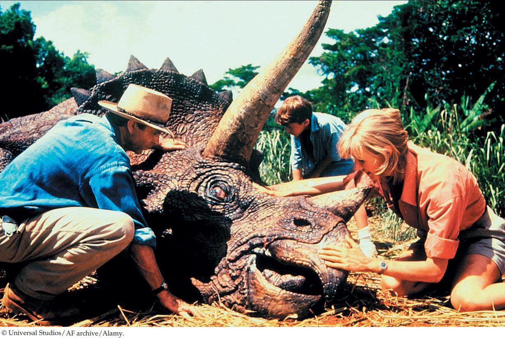

| 9 | DNA and Its Role in Heredity |
|

Michael Crichton’s novel Jurassic Park was based on the fictional premise that DNA retrieved from fossils could produce living dinosaurs, such as this Triceratops.
|
Jurassic Park, in both its literary and film incarnations, featured a fictional theme park populated with live dinosaurs. In the story, scientists isolated DNA from dinosaur blood extracted from the digestive tracts of fossil insects. The insects supposedly sucked the reptiles’ blood immediately before being preserved in amber (fossilized tree resin). According to the novel, this DNA could be manipulated to produce living individuals of long-extinct organisms such as velociraptors and the famous Tyrannosaurus rex.
The late Michael Crichton got the idea for his novel from an actual scientific paper in which the authors cracked open amber that was 40 million years old and extracted DNA from a fossilized bee that had been trapped inside. Other scientists had reported on ancient DNA from amber-trapped termites and gnats. Then several reports emerged of DNA from 80-million-year-old dinosaur bones. Unfortunately, upon additional study, these “preserved” DNAs turned out to be contamination–either from microorganisms living in the surrounding soil or even from the scientists studying the samples. In fact, one of the supposed dinosaur DNAs turned out to be from the human Y chromosome.
It is unlikely that any long DNA polymers would survive over millions of years. The oldest fossilized insects in amber are about 40 million years old, and the dinosaurs died out about 65 million years ago. Nevertheless, the huge success of Crichton’s book brought ancient DNA to the attention of millions of people, including biologists who study the evolution of life on Earth. DNA samples have been isolated from the remains of entire ecosystems of organisms preserved for many thousands of years in permafrost. With improved methods for DNA analysis, large portions of these organisms’ genomes are being sequenced.
Methods to replicate tiny amounts of DNA and keep it from contamination have improved, and attention has turned to ancient human DNA. For example, DNA samples have been studied from people whose bodies were preserved in ice, such as the “Tyrolean Iceman” who died in the Austrian Alps 5,300 years ago. There is even a Neandertal Genome Project to analyze the DNA from preserved specimens of Homo neanderthalensis, a species that lived in Europe at the same time as early humans, between 350,000 and 30,000 years ago.
What can we learn from ancient DNA?